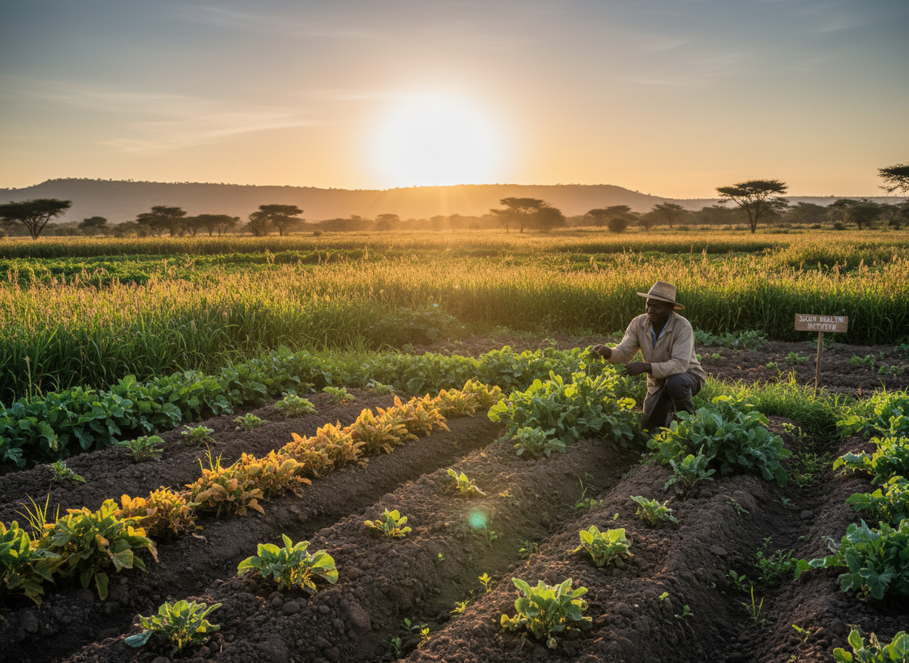

Pillar 3
Regenerative Agriculture
Sustainable farming practices that nourish communities and contribute to climate resilience.
Back to Our Work


Soil Health & Biodiversity
We promote farming practices that rebuild soil health, increase biodiversity, and reduce dependence on synthetic inputs - creating more resilient and productive agricultural systems.
Agroforestry Systems
Integrating trees into farmland provides shade, improves soil fertility, sequesters carbon, and diversifies income - a holistic approach that benefits both farmers and the environment.
Food Security & Community Nutrition
By supporting diverse, regenerative food systems, we help communities reduce hunger, improve nutrition, and build greater resilience against climate-driven food shocks.